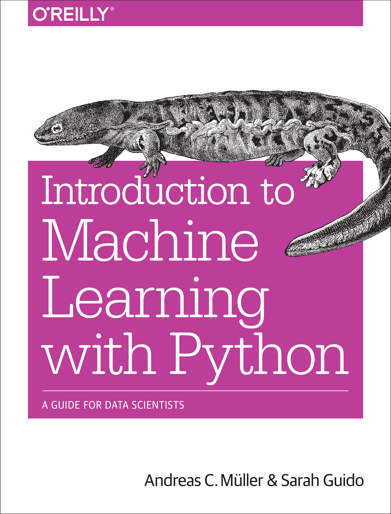

COMPLETE BOOK FOR INTRODUCTION TO MACHINE LEARNING WITH PYTHON
A Guide for Data Scientists

আপনি যদি মেশিন লার্নিং এর জগতে নতুন হন অথবা পাইথন ব্যবহার করে হাতে কলমে শিখতে চান, তাহলে এই বইটি আপনার জন্য সেরা সঙ্গী। ডেটা সায়েন্সের মূল ভিত্তি থেকে শুরু করে আধুনিক মেশিন লার্নিং অ্যালগরিদম পর্যন্ত, সবকিছুই সহজবোধ্য ভাষায় এই বইটিতে ব্যাখ্যা করা হয়েছে।
পাইথনের জনপ্রিয় লাইব্রেরি যেমন scikit-learn ব্যবহার করে কীভাবে বাস্তব ডেটা সেট নিয়ে কাজ করতে হয়, মডেল তৈরি করতে হয় এবং সেগুলোকে ইভালুয়েট করতে হয়, তার বিস্তারিত নির্দেশনা পাবেন এখানে।
লেখক পরিচিতি
Andreas C. Müller: তিনি একজন প্রখ্যাত কম্পিউটার বিজ্ঞানী এবং নিউইয়র্ক বিশ্ববিদ্যালয়ের (NYU) ডেটা সায়েন্স ইনস্টিটিউটের একজন অত্যন্ত সম্মানিত লেকচারার ও গবেষক। Andreas C. Müller সবচেয়ে বেশি পরিচিত জনপ্রিয় পাইথন মেশিন লার্নিং লাইব্রেরি **scikit-learn** এর একজন প্রধান কো-ডেভেলপার হিসেবে। মেশিন লার্নিং কমিউনিটিতে তার অবদান অসামান্য এবং তিনি এই ক্ষেত্রের অন্যতম প্রভাবশালী ব্যক্তিত্ব হিসেবে বিবেচিত হন। তার গভীর জ্ঞান এবং বাস্তব অভিজ্ঞতা এই বইটিকে শিক্ষানবিসদের জন্য অত্যন্ত কার্যকর করে তুলেছে।
Sarah Guido: তিনি একজন দক্ষ সফটওয়্যার ইঞ্জিনিয়ার এবং ডেটা সায়েন্টিস্ট। Sarah Guido-ও scikit-learn টিমের একজন গুরুত্বপূর্ণ সদস্য। ডেটা অ্যানালাইসিস এবং ভিজ্যুয়ালাইজেশনে তার দক্ষতা অনবদ্য। এই বইটিতে তার ব্যবহারিক দৃষ্টিভঙ্গি এবং স্পষ্ট ব্যাখ্যা জটিল ধারণাগুলোকে সহজবোধ্য করে তুলেছে, যা নতুন শিক্ষার্থীদের জন্য খুবই সহায়ক।
এই দুই লেখকের মিলিত প্রচেষ্টা "Introduction to Machine Learning with Python" বইটিকে মেশিন লার্নিং শেখার জন্য একটি অপরিহার্য রিসোর্স হিসেবে প্রতিষ্ঠিত করেছে।
বইটি কেন পড়বেন?
- মেশিন লার্নিং এর মৌলিক ধারণাগুলো পরিষ্কারভাবে বুঝতে পারবেন।
- পাইথন এবং scikit-learn ব্যবহার করে প্র্যাক্টিক্যাল কোডিং শিখতে পারবেন।
- বাস্তব ডেটা সেটের উপর কাজ করার অভিজ্ঞতা পাবেন।
- ডেটা সায়েন্টিস্ট এবং মেশিন লার্নিং ইঞ্জিনিয়ার হওয়ার পথে এটি একটি শক্ত ভিত্তি তৈরি করবে।
Thanks for visit